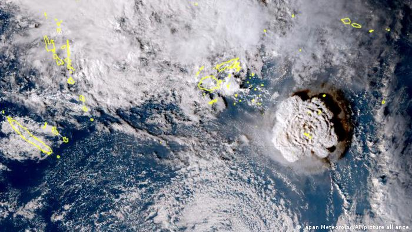
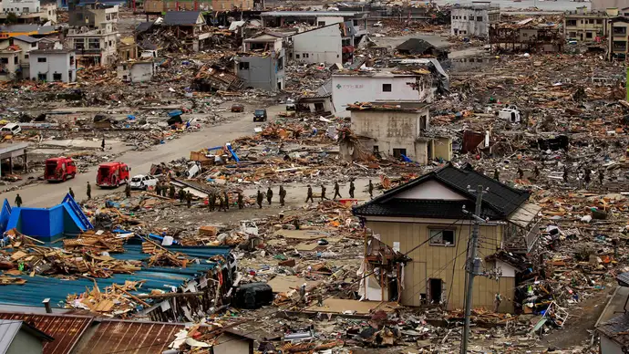
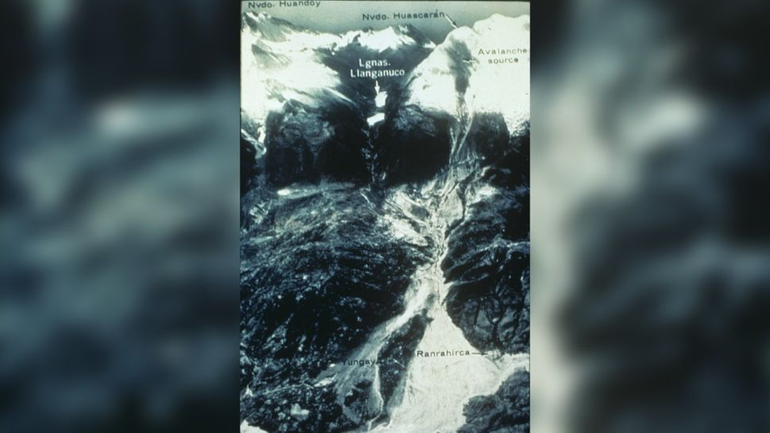
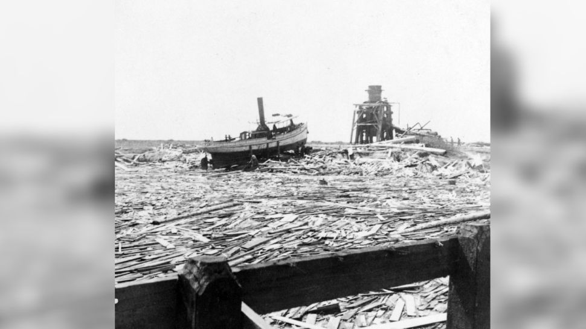

Blog
Recent Natural Disasters that shook the world
Under water volcano eruption near Tonga
Why the volcanic eruption in Tonga was so violent, and what to expect next, January 16, 2022
Sattelite picture of tonga volcano
The Kingdom of Tonga doesn’t often attract global attention, but a violent eruption of an underwater volcano on January 15 has spread shock waves, quite literally, around half the world.
Japan Earthquake and Tsunami 2011
Great Sendai Earthquake, March 11, 2011
AP picture: Members of the Japanese Ground Self-Defense Force in rescue and recovery operations in Ōfunato, Japan
Great Sendai Earthquake or Great Tōhoku Earthquake, severe natural disaster that occurred in northeastern Japan on March 11, 2011. The event began with a powerful earthquake off the northeastern coast of Honshu, Japan’s main island, which caused widespread damage on land and initiated a series of large tsunami waves that devastated many coastal areas of the country, most notably in the Tōhoku region (northeastern Honshu). The tsunami also instigated a major nuclear accident at a power station along the coast.
Tsunami Indonesia
2004 Indian Ocean Earthquake and Tsunami, December 26, 2004

US Navy Photo: Banda Aceh, Indinesia
The 2004 Indian Ocean earthquake and tsunami (also known as the Boxing Day Tsunami and, by the scientific community, the Sumatra–Andaman earthquake[10][11]) occurred at 07:58:53 local time (UTC+7) on 26 December, with an epicentre off the west coast of northern Sumatra, Indonesia. It was an undersea megathrust earthquake that registered a magnitude of 9.1–9.3 Mw, reaching a Mercalli intensity up to IX in certain areas. The earthquake was caused by a rupture along the fault between the Burmese Plate and the Indian Plate.
1970 THE HAUSCARAN AVALANCHE
The landslide that cost 70,000 lives, May 31, 1970
image: US geological survey
On May 31, 1970, a 7.9-magnitude earthquake caused one of Peru's deadliest landslides, according to the BBC. The quake emanated around 22 miles (35 km) from Mount Huascarán, Peru's highest mountain. The force of the earthquake caused massive landslides that buried surrounding towns, in particular Yungay and Ranrahirca. .
The 1900 Great Galveston Storm
Title Description, Nov 1, 2021
Image: underwood&Underwood
On Sept. 8, 1900, a storm swept through Galveston, an island off the coast of Texas. At the time, Galveston was one of Texas's biggest port cities, but a hurricane with 140 mph (225 km/h) winds swept it off the map. It's estimated that 3,600 houses and 600 businesses were reduced to rubble across 1,900 acres (770 hectares), according to the Texas Historical Foundation. Although it remains unclear exactly how many people perished during the hurricane, the final death toll was estimated to be between 6,000 and 8,000 people — one-sixth of the island's population, according to the foundation.